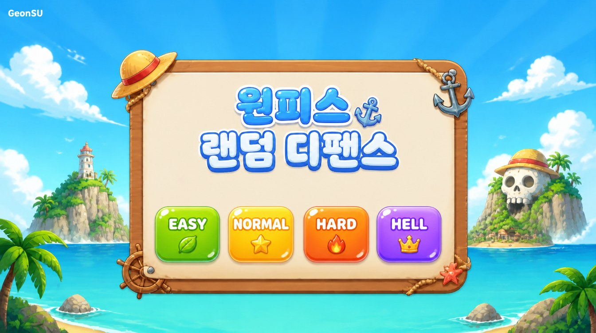

라운드
1
/
55
40
s
💰
0
처치
0
필드 0 / 240
🔊
1x
⏸
난이도
-
적
해군 신병
보스까지
5R
초월 보유
0기
🎯
-
🤝
시너지 없음
건너뛰기 ▶
⚓ 원피스 랜덤 디펜스
START
⚓ 원피스 랜덤 디펜스
게임 리소스를 불러오는 중입니다
0%
준비 중…

패 배
다시 도전
GAME CLEAR!
한 번 더
⚓ 유닛 소환
▲
랜덤 소환 (소환권
20
장)
⚡일괄
💰 35골드 →
안흔함
50% / 실패 시
흔함
⚡일괄
💰 100골드 →
희귀
38% / 실패 시
특별함
⚡일괄
✨ 고급 소환
▲
💰 500골드 →
전설
50% / 실패 시
희귀
⚡일괄
💰 3,500골드 →
신화
4% /
초월
62% / 실패 시
전설
(절대 등급 재료 수급 루트! 신화 대박 확률 포함)
⚡일괄
👥 필드 유닛
▲
🔀 필드 재정렬 (근접→사이드)
소환 버튼으로 유닛을 뽑아보세요!
📦 보관함
▲
자동보관 (체크한 등급 이하 전체 · 하나만 선택)
흔
안흔
특별
희귀
전설
신화
흔
안흔
특별
희귀
전설
신화
비어 있음 — 필드가 가득 차면 소환 유닛이 여기에 쌓입니다.
🔨 조합법
▲
⚡ 일괄 조합
📖 도감
▼
📜 로그
▼